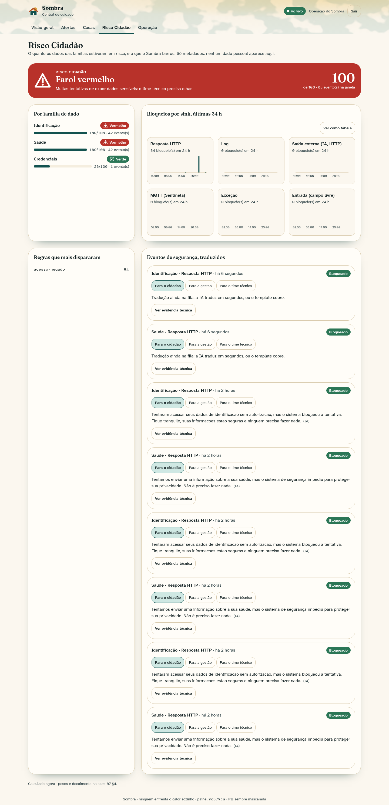
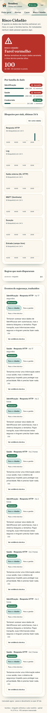

Sombra
Proteção de pessoas idosas que moram sozinhas durante ondas de calor em São Paulo.
Cybersecurity · Prof. Vitor Lasse
Global Solution 2026.2 · FIAP
Engenharia de Software, 3º ano
19 de novembro de 2026
Código: github.com/andrenakarocha/sombra
e o ZIP sombra-codigo.zip, entregue à parte.
Vídeo do dashboard: youtu.be/O-JLswyySPU
O Sombra acompanha pessoas idosas que moram sozinhas: uma Sentinela mede o calor de dentro da casa, o Core decide quando
pedir o "estou bem" e quando avisar a família, e o operador da prefeitura acompanha tudo num painel. Para isso o sistema
guarda condições de saúde, remédios, CPF, Cartão SUS e telefones, que a LGPD trata como dado pessoal sensível
(art. 5º, II, e art. 11). O módulo Sombra.Privacidade fica dentro do Core (C#) e garante que esses dados não
saiam por log, por resposta, por mensagem de erro, para a IA nem pelo broker MQTT, e que cada tentativa vire uma
explicação clara para quem é afetado.
| Critério | Pts | Como o Sombra atende | Evidência |
|---|---|---|---|
| Robustez do motor de PII | 3 | 8 regras em JSON (configuráveis sem recompilar), validação de dígito do CPF e do Cartão SUS, detecção por chave e por conteúdo, mascaramento e cifra AES-256-GCM em repouso | §1 · 63 casos, 0 falso negativo |
| Eficácia do Taint Analysis | 3 | taint dinâmico (o dado marcado na entrada e conferido em 6 sinks, com bloqueio) e estático (Semgrep em modo taint, com canário) | §2 · auditoria A1–A8: 8 de 8 vazam sem o módulo, 8 de 8 bloqueados com ele |
| Inovação com IA na remediação | 2 | cada evento vira três traduções (cidadão, gestão, time técnico) por um prompt só com metadados, com guarda na saída da IA e fallback em templates | §3 · traduções reais do Gemini |
| Dashboard Executivo de Risco Cidadão | 2 | farol ponderado por categoria, desfecho e severidade, com decaimento no tempo, ao vivo pelo SignalR | §4 · prints do painel |
make entrega-cyber.Regras como dados. Cada tipo de dado pessoal é uma regra em pii-regras.json, validada contra um schema
na carga: chaves de campo, padrão, validador, máscara e a base legal. Uma regra nova entra sem recompilar o Core. As 8
regras de hoje: cpf, cns, rg, telefone, email, cep, saude, credencial.
Sombra.Privacidade/Regras/pii-regras.json · a regra do CPF{
"id": "cpf",
"categoria": "Identificacao",
"severidade": "Alta",
"chaves": [
"cpf",
"documento"
],
"padrao": "(?<![\\p{L}\\p{N}])\\d{3}\\.?\\d{3}\\.?\\d{3}-?\\d{2}(?![\\p{L}\\p{N}])",
"validador": "cpf",
"mascara": "cpf",
"baseLegal": "LGPD art. 5º, I"
}Por chave e por conteúdo. O campo documento é PII pelo nome; o mesmo CPF escrito no meio de
"observações" é PII pelo conteúdo. O PiiScanningMiddleware percorre o JSON de toda requisição e marca os
valores no ContextoDeTaint, sem nunca logar o valor.
Sem falso alarme. Onze dígitos só são CPF se os dois verificadores baterem (ao lado), e o Cartão SUS passa pela validação oficial (soma ponderada múltipla de 11).
services/core-api/sources/Sombra.Privacidade/Deteccao/Validadores.cs · linhas 55–64 · CPF de verdade, não qualquer número de 11 dígitospublic static bool Cpf(string candidato) { int[] d = Digitos(candidato); if (d.Length != 11 || d.All(x => x == d[0])) { return false; } return d[9] == VerificadorDoCpf(d, 9) && d[10] == VerificadorDoCpf(d, 10); }
services/core-api/sources/Sombra.Privacidade/Deteccao/Validadores.cs · linhas 144–154private static int VerificadorDoCpf(int[] d, int quantidade) { int soma = 0; for (int i = 0; i < quantidade; i++) { soma += d[i] * (quantidade + 1 - i); } int resto = soma % 11; return resto < 2 ? 0 : 11 - resto; }
A resposta real do cenário A1 da auditoria, com o módulo ligado: o operador vê o necessário, nunca o dado inteiro.
POST /api/v1/domicilios/{{Lurdes}}/moradores → 201 · resposta real da auditoria (dados sintéticos){
"nome": "Iracema Duarte",
"cpf": "***.361.***-79",
"cartaoSus": "*** **** **** 4804",
"perfilDeSaude": "[DADO DE SAÚDE PROTEGIDO]"
}No banco, CPF, Cartão SUS, perfil de saúde e telefones são gravados com AES-256-GCM por value converters do EF
Core, e o CPF tem um índice cego HMAC para ser buscado sem ser decifrado. As chaves vêm do ambiente, nunca do código
(Repouso/CifraDeCampos.cs).
63 de 63 casos corretos · falsos negativos: 0 · falsos positivos: 0 — positivos, negativos e casos difíceis (CPF com o
verificador trocado, CID no meio de uma frase, JSON aninhado, unicode). Gerado pelo teste RelatorioDeAcertos.
| Regra | Casos com o dado | Detectados | Falsos negativos | Falsos positivos | Recall |
|---|---|---|---|---|---|
cpf | 8 | 8 | 0 | 0 | 100 % |
cns | 3 | 3 | 0 | 0 | 100 % |
rg | 3 | 3 | 0 | 0 | 100 % |
telefone | 7 | 7 | 0 | 0 | 100 % |
email | 4 | 4 | 0 | 0 | 100 % |
cep | 2 | 2 | 0 | 0 | 100 % |
saude | 7 | 7 | 0 | 0 | 100 % |
credencial | 4 | 4 | 0 | 0 | 100 % |
Fontes: corpo, query e headers da requisição (marcados pelo middleware) e os campos sensíveis lidos do banco.
Sinks guardados: log, resposta HTTP, saída externa (Clima e IA), MQTT, exceções e a própria entrada (PII em texto
livre). Cada guarda confere a saída contra o ContextoDeTaint e os detectores, bloqueia ou redige, e registra um
VazamentoBloqueado só com metadados.
services/core-api/sources/Sombra.Privacidade/Taint/Sensivel.cs · linhas 15–44 · ToString() devolve [PII:SAUDE] e o JSON recusa serializarpublic readonly record struct Sensivel<T> { private readonly T _valor; public Sensivel(T valor, CategoriaDePii categoria) { _valor = valor; Categoria = categoria; } public CategoriaDePii Categoria { get; } public T Revelar(string finalidade) { ArgumentException.ThrowIfNullOrWhiteSpace(finalidade); return _valor; } public override string ToString() => $"[PII:{Categoria.ToString().ToUpperInvariant()}]"; }
services/core-api/sources/Sombra.Privacidade/Taint/Sensivel.cs · linhas 57–64private sealed class Recusa<T> : JsonConverter<Sensivel<T>> { public override Sensivel<T> Read(ref Utf8JsonReader reader, Type typeToConvert, JsonSerializerOptions options) => throw new JsonException("Sensivel<T> não é lido de JSON."); public override void Write(Utf8JsonWriter writer, Sensivel<T> value, JsonSerializerOptions options) => throw new InvalidOperationException($"Um dado {value.Categoria} (Sensivel<T>) não sai em JSON: chame Revelar(finalidade) num endpoint [PermitePii]."); }
O mesmo roteiro roda com o módulo desligado (modo inseguro, aceito só no ambiente Demo) e
ligado, num PostgreSQL real. Teste OitoCenariosVazamDesligadoESaoBloqueadosLigado, relatório em
security/auditoria/relatorio.md.
| # | Cenário | Esperado | Sem o módulo | Com o módulo |
|---|---|---|---|---|
| A1 | POST de morador com CPF dentro do texto livre de saúde | mascarado antes de gravar e logar | 201 · vazou | 201 · bloqueado |
| A2 | POST que provoca exceção com o laudo no payload | resposta de erro segura, sem o laudo | 422 · vazou | 422 · bloqueado |
| A3 | GET não autenticado do perfil de saúde | 401 sem nenhum dado, evento registrado | 200 · vazou | 401 · bloqueado |
| A4 | Endpoint de depuração que loga o Cartão SUS | log redigido e VazamentoBloqueado{Log} | 204 · vazou | 204 · bloqueado |
| A5 | PII no prompt da LLM | bloqueada no handler de saída | 200 · vazou | 422 · bloqueado |
| A6 | PII publicada no MQTT | bloqueada no publicador | 202 · vazou | 422 · bloqueado |
| A7 | Senha na query string | removida do log | 200 · vazou | 200 · bloqueado |
| A8 | Telemetria MQTT com HMAC falso | descartada, evento de segurança | 202 · vazou | 401 · bloqueado |
A1, na prática: sem o módulo, o CPF escrito no texto livre de saúde chega ao banco
(texto livre gravado no banco (decifrado): Hipertensão. Em ca…). Com o módulo, o texto é mascarado antes de gravar e de
logar, e o evento PII_FORA_DO_LUGAR · Entrada · Identificacao · regra cpf · bloqueado vai para o dashboard.
Complementa o dinâmico no código: fontes (DTOs com CPF, Cartão SUS, laudo, senha e [FromBody]), sinks
(ILogger.Log*, Console.Write*, Problem(detail:…)) e sanitizers
(MascaradorDePii.Mascarar, Sensivel<T>). Um arquivo canário com vazamentos de
propósito prova que a regra pega; o código de produção sai limpo. Roda no CI com SARIF.
$ make semgrep canário ok: 8 vazamentos achados, nenhum falso positivo código do Core: 213 arquivos, 0 achados, 0 erros de parse SARIF para o Code Scanning: 4 achados com nosemgrep justificado ficam de fora
O TradutorDeRiscoWorker lê os eventos de segurança e pede ao Gemini três textos: para o cidadão (até 2
frases, tom calmo, sem jargão), para a gestão (impacto e artigo da LGPD) e para o time técnico (a correção, que
é a remediação). O prompt é montado só com metadados: tipo, sink, categoria, severidade, regra, rota sem valores e se foi
bloqueado.
services/core-api/sources/Sombra.Privacidade/Traducao/PromptDeRisco.cs · linhas 52–67 · o prompt só com metadadospublic static string Montar(EventoParaTraduzir evento) { ArgumentNullException.ThrowIfNull(evento); string metadados = JsonSerializer.Serialize(new { tipo = evento.Tipo, sink = evento.Sink?.ToString(), categoria = evento.Categoria.ToString(), severidade = evento.Severidade.ToString(), regra = evento.Regra, onde = OndeSeguro(evento.Onde), desfecho = evento.Bloqueado ? "bloqueado" : "vazou", repeticoesEm24h = evento.Repeticoes, }); return $"Evento de segurança (só metadados): {metadados}"; }
A saída da IA também é guardada: passa pelos mesmos detectores de PII, por uma lista de jargões proibidos para o cidadão, por limite de tamanho e de frases. Se reprovar, ou se a IA não responder no tempo, entra um template.
services/core-api/sources/Sombra.Privacidade/Traducao/GuardaDaTraducao.cs · linhas 47–61 · o que reprova uma traduçãopublic static bool Aprovar(TraducaoDeRisco traducao, out string motivo) { ArgumentNullException.ThrowIfNull(traducao); motivo = (traducao.Cidadao, traducao.Gestao, traducao.Tecnico) switch { var (c, g, t) when string.IsNullOrWhiteSpace(c) || string.IsNullOrWhiteSpace(g) || string.IsNullOrWhiteSpace(t) => "campo_vazio", var (c, g, t) when c.Length > MaximoCidadao || g.Length > MaximoGestao || t.Length > MaximoTecnico => "longa_demais", var (c, g, t) when !_guarda.Verificar(c, null).Limpo || !_guarda.Verificar(g, null).Limpo || !_guarda.Verificar(t, null).Limpo => "dado_pessoal", var (c, _, _) when FimDeFrase().Count(c.Trim()) > 2 => "cidadao_com_mais_de_duas_frases", var (c, _, _) when Palavra().Matches(c.ToLowerInvariant()).Any(p => _jargoes.Contains(p.Value)) => "jargao_para_o_cidadao", var (c, g, _) when SemAcento(c) || SemAcento(g) => "sem_acento", _ => string.Empty, }; return motivo.Length == 0; }
Nossa revisão: Fiel ao evento, e a correção técnica é a do prompt (o token e o correlationId). Gerada depois da correção.
Nossa revisão: Fiel ao evento, cita o art. 11 para saúde e a correção certa (o token). Gerada depois da correção.
Nossa revisão: Fiel ao evento nas três audiências, e a correção técnica é a certa (o segredo HMAC e o relógio). A guarda de hoje aprova.
Ao montar este documento, a gente leu as traduções que o Core tinha gerado e achou erros que a guarda deixava passar: um texto sem acento, uma promessa inventada, uma correção técnica errada e um texto com o sentido trocado. Cada um virou uma regra da guarda e um teste com o texto real. E a tradução guardada no cache agora passa de novo pela guarda antes de ser reaproveitada: foi assim que os eventos novos ganharam as traduções certas acima, em vez de herdar as erradas.
Nossa revisão: Inventa um fato ("nossa equipe já está cuidando disso") e a correção técnica sugere Sensivel<T> em vez do segredo HMAC. Hoje a guarda recusa (cidadao_promete_o_que_nao_existe) e vale o template.
Nossa revisão: Sem acento ("identificacao", "autorizacao", "informacoes"), embora o prompt peça a ortografia correta. Hoje a guarda recusa (sem_acento).
Nossa revisão: Erra o sentido: alguém sem login tentou ver o dado de saúde e foi barrado, mas o texto diz que o Sombra "tentou enviar"; e a correção não cita o token. Hoje a guarda recusa (cidadao_contradiz_o_evento).
services/core-api/sources/Sombra.Privacidade/Traducao/GuardaDaTraducao.cs · linhas 72–91 · a coerência com o eventopublic static bool Aprovar(TraducaoDeRisco traducao, EventoParaTraduzir evento, out string motivo) { ArgumentNullException.ThrowIfNull(evento); if (!Aprovar(traducao, out motivo)) { return false; } string cidadao = traducao.Cidadao.ToLowerInvariant(); string tecnico = traducao.Tecnico.ToLowerInvariant(); motivo = evento switch { _ when Palavra().Matches(cidadao).Any(p => p.Value is "equipe") => "cidadao_promete_o_que_nao_existe", { Tipo: var t } when t.StartsWith("MQTT_", StringComparison.Ordinal) && !Cita(tecnico, "hmac", "segredo", "relógio") => "tecnico_sem_a_correcao_do_tipo", { Regra: "acesso-negado" } when !Cita(tecnico, "token", "login", "credencial", "correlationid") => "tecnico_sem_a_correcao_do_tipo", { Regra: "acesso-negado" } when Palavra().Matches(cidadao).Any(p => p.Value is "enviar" or "enviou" or "enviamos" or "tentamos") => "cidadao_contradiz_o_evento", _ => string.Empty, }; return motivo.Length == 0; }
O Gemini respondeu 503 ou passou do limite de 8 s, e o tradutor usou o template, que também passa pela guarda.
O limite, dito com clareza: a guarda confere a forma e uma coerência mínima por tipo de evento (o remédio técnico certo, o verbo do texto do cidadão, nenhuma promessa que o sistema não cumpre). Isso não é entender o texto. Por isso a tradução nunca anda sozinha: o painel mostra ao lado a evidência técnica do evento (tipo, sink, regra, desfecho), e todo tipo de evento tem um template revisado por nós.
O farol soma os eventos dos últimos 7 dias, ponderados pela categoria (saúde e credencial pesam mais que contato e
localização), pela severidade e pelo desfecho (um vazamento pesa 3 vezes um bloqueio), com meia-vida de 72 h.
Verde abaixo de 30, amarelo até 70, vermelho a partir de 70. O painel atualiza ao vivo pelo evento
RiscoCidadaoAtualizado do SignalR, e o app mostra à família o farol da própria casa.
services/core-api/sources/Sombra.Privacidade/Risco/RiscoCidadao.cs · linhas 79–91 · a pontuação de um eventopublic static double Pontos(EventoDeRisco evento, DateTimeOffset agora) { ArgumentNullException.ThrowIfNull(evento); TimeSpan idade = agora - evento.Momento; if (idade < TimeSpan.Zero || idade > Janela) { return 0; } double decaimento = Math.Pow(0.5, idade / MeiaVida); return PontosPorEvento * _pesoDaCategoria[evento.Categoria] * _pesoDaSeveridade[evento.Severidade] * (evento.Bloqueado ? 1 : PesoDoVazamento) * decaimento; }

RiscoCidadaoAtualizado a cada lote de eventos, e o painel recalcula sem
recarregar.
| Comando (na raiz) | O que prova |
|---|---|
make up | sobe o Sombra inteiro (Core, Clima, banco, broker e painel) com os segredos gerados no .env |
make -C services/core-api pii-relatorio | refaz o relatório de acertos do motor de PII (§1) |
security/auditoria/rodar-auditoria.sh | refaz a auditoria A1–A8, antes e depois (§2) |
make semgrep | roda o taint estático: o canário dispara e a produção sai limpa (§2) |
make test-core | todos os testes do Core, incluindo os do módulo de privacidade |
make entrega-cyber | refaz este PDF e o ZIP do código |
Código: services/core-api/sources/Sombra.Privacidade ·
auditoria e relatórios: security/ · spec: docs/specs/07-cyber-privacidade.md.